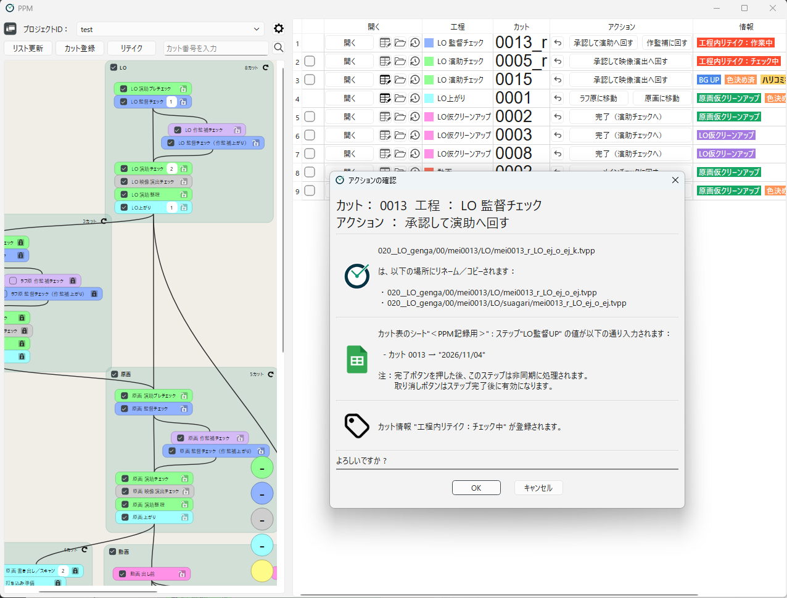

What is PPM?

PPM is a Windows application for managing animation production progress.
It lists the shots in each workflow and lets you perform operations
such as renaming / copying files, and recording to the spreadsheet with one button.
No dedicated server or database is needed: progress is determined from file names and locations.
Pipelines, naming rules and action steps can be designed in project settings without programming.
GitHub repository of PPM
PPM is distributed under the BSD 3-Clause License.